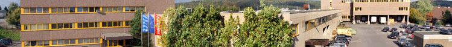
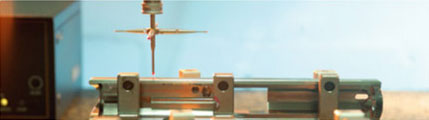
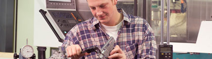

|
Меню |
О компании Продукция Umarex с фирменным товарным знаком Laserliner за несколько лет стала у профессионалов ассоциироваться с инновационно - измерительными технологиями. Под оранжевым фирменным товарным знаком и началось триумфальное шествие измерительных приборов с лазерной технологией. Автоматические ротационные лазеры приборы с системой анти - дрейфа (ADS), а также с технологией передачи радиосигнала (RFT) на приёмник лазерного луча, делают возможным выполнение различных сложных задач профессиональными строителями. Приёмник лазерного луча при помощи маркировки Spotlite, облегчает работу на стройплощадке и при проведении ремонтных работ дома.  Лазерные приборы позволяют быстро проверить горизонт и вертикаль фундаментов и стен, проектировать наклон водопроводных и канализационных труб, планировать уклоны земельного участка, монтировать секции забора, контролировать кладку кирпича и облицовочной плитки, производить разметку маяков для монтажа потолков и заливки пола, монтировать телескопические ворота и кровлю, помогать всем без исключения делать свою работу эффективной. Инженеры Umarex постоянно работают над усовершенствованием функциональности приборов. Особое внимание уделяется и совершенствованию дизайна.  Качество - это главный критерий. Таким образом, все лазерные уровни и нивелиры проходят контроль на оптоэлектронном оборудовании для обеспечения 100%-й точности. Команда Laserliner уделяет большое внимание не только техническому развитию приборов. Разнообразные наглядные пособия подробно демонстрируют полный ассортимент продукции. Кроме того, демонстрационные и учебные видеоролики по работе и применению приборов Вы найдёте на нашем сайте и TS мониторах в торговых сетях. Цветные иллюстрации в каталогах и на упаковках приборов дают возможность понять о разнообразии и возможностях использования их. |